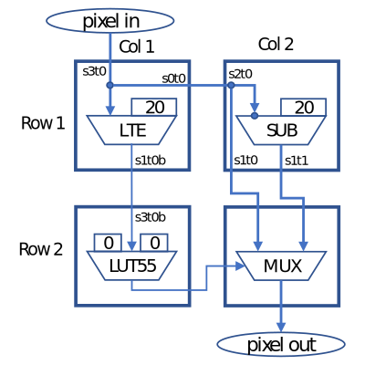

Introduction to PnR
Place-and-Route (PnR) is a critical step in the CGRA flow, where hardware resources are configured based on application logic.
The input to PnR tolchain is usually a netlist, the same type of hypergraph
used in ASCI and FPGA. The details of hypergrpah can be found
here. Essentially the input is a
list of nets and in each net there is one output pin/port that drives one or
more input pins/ports. We will use pin and ports interchangably throughout this
documentation. In out CGRA, the ports are either 16-bit or 1-bit, such as
data0 and wen.
The figure below shows the PnR result for a 2x2 grid (credit: Steve).

The output from the PnR toolchain is usually a bitstream, which encodes the
control logic and will be load to the chip to perform computation. In our
CGRAFlow, cgra_pnr outputs an assembly-level human-readable code that can be
directly compiled into bitstream through bsbuilder. The reason to use an
assembly-level is that we can easily see which part goes wrong. Also bsbuider
has many built-in checks so if PnR tools produce an illegal result, the mistake
will be caught by bsbuilder. However, as garnet becomes more and more
mature, PnR tools may choose garnet to generate bitstream directly.
Overall, there are four stages of PnR:
- Packing
- Placement
- Routing
- Global routing (to be implemented)
- Detailed routing
- Bitstream Generation
Timing and area analysis:
Call for contribution:
Prerequisites
Because the C++ implementation, exposed to Python via pybind11, uses lots
of C++14/17 features, a modern C++ compiler is required.
g++7.0 and abovegcc7.0 and above.cmake3.0 and above.Python2.7+/3.6+
Install
$ git clone https://github.com/Kuree/cgra_pnr
$ make
$ pip install thunder/
$ pip install -r requirements.txt
Usage
cgra_info repo has a one-button script to run the entire PnR flow:
$ ./scripts/pnr_flow.sh
Usage: ./scripts/pnr_flow.sh [--no-reg-fold] <arch_file> <netlist.json> [<output.bsb>]
if <output.bsb> not specified, it will output <netlist.bsb>
to the same directory as <netlist.json>
By design, it is compatible with both Python 2 and Python 3. Even though the
core part is implemented in C++, setup.py in the thunder/ folder will
automatically detect the Python environment and build Python package
accordingly.
CoreIR mapper fix scripts
Currently the mapper has several bugs that do not work with the current hardware design. These fix scripts are necessary before the mapper gets fixed. Here is a list of scripts that fix the input netlist:
fix_mux.py: fix muxselsignal because there is a disagreement on mux implementation bewteen the actual PE design and CoreIR.fix_const.py: fix CoreIR Mapper not being able to duplicate constants:- currently it will remove all the formatting in the json file.
fix_smax.py: fix op debug string error. The CGRA Mapper will try to usemaxinstead ofsmaxin all cases, which is incorrect.
coreir_fix/fix_all.sh is a simple script that fixes all the bugs in the netlist
file. To see the usage, simply:
./fix_all.sh
Usage: ./fix_all.sh <mapped_netlist.json> <fixed_netlist.json>
Place for FPGA
The placer should be able to place various FPGA placement benchmark such as VPR. Titan 23, and ISPD. However, because it's not designed to place generic netlists, it may not obtain an optimal solution, or may be very slow to converge.